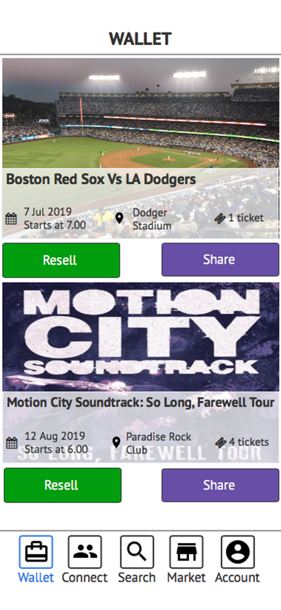

During the Winter 2019 term, I was working as part of a team on a sponsored project. Our sponsor was a start-up ticketing company True Tickets.
Matt Zarracina, True Tickets' CEO, was looking for the ways to enhance ticketing experience and add features that would increase app engagement.
In order to see what are common concerns when it comes to purchasing tickets to events and identify future design opportunities, our team interviewed 10 people.
Interviewees:
Age range: 23-30
6 female/4 male
Part-time and full-time employees
All living in the US. Origin: MA, NH, PA, CA
Industries: radio, tech, merchandising, physical therapy, finance, management, advertising.
Our research questions focused on how frequently interviewees attended events and purchased tickets, how often they bought tickets online and whether they prefered to use electronic or physical tickets.
We wanted to understand more about people's use of ticketing platforms, dig deeper into issues surrounding electronic tickets, and identify immediate pain points in the ticket purchasing process.
Much of the benefits that True Tickets offers might not be immediately visible to the end user, so we wanted to know what our diverse range of interviewees thought about ticketing in general and pair that information alongside the goals of True Tickets. When it comes to events, there are numerous websites to purchase from so why would people make the switch to a new platform? Where is the first source people go to for tickets? How does electronic ticketing change purchasing decisions, such as people who go to the box office to avoid fees? These are just some of the questions we were looking to answer to better improve the UX design of the True Tickets mobile app.
After the interviews, we quickly realized that many people have different behaviors for purchasing tickets and attending events. Some people are motivated by ease, some by fees, and some last minute. There are many potential benefits the True Tickets app can offer these users, but after our first glance of the app we realized that we need to make lots of changes to attract these users and provide a streamlined purchasing experience. Many people have yet to make the switch to electronic tickets and purchasing online, let alone on mobile, so this is a big area to address to capture a new audience.
To better understand our research findings, we started looking for what our interviewees had in common and
identified two groups of 2 that had trends:
Based on the insights uncovered in the interviews, we created a primary persona.
After analyzing the interview responses, we started looking for opportunities to introduce new features that would improve user experience. After brainstorming, we had an impressive list of new features to add but finally, we narrowed down the list to the ones that made most sense to the True Tickets team and were in line with our user research findings:
“ I follow my favorite singers on Facebook so I never miss a concert again! ” .
Nowadays, social media is a big part of people's lives so our team was not surprised to find out that social media apps were among the most used on our interviewees' iPhones. So why not include it in the ticketing apps? We've designed a new feature that allows users to connect with friends who are also using True Tickets app. Also, after purchasing tickets, users will get a a chance to share them on popular social media platforms right from the app.
Our user research showed that people have no idea how to go about reselling tickets purchased over the phone, even though there were situations when that would benefit from it. We decided to add the reselling feature to the app and to make things easier, resellers will be able to receive payment for the ticket to their True Tickets balance instead of a credit card.
This feature would allow people to find parking, hotels, hospitals, and restaurants located near their concert venue.
After getting an understanding of who our users are and what they want, we created low-fidelity prototypes of the new TrueTickets app.
Now was the time to see how well our designs were working. We have selected 6 participants and presented them with 5 tasks-scenarios: :
Due to time constraints, our team were not able to proceed with creating the high-fidelity protototypes but in order to practice my skills, I decided to proceed on my own and created prototypes in Sketch.
After downloading the True Tickets app and signing into her account, Meghan (our primary persona) is ready to search for tickets to upcoming events. When the home screen loads, she can begin her search for upcoming events.
Meghan has just opened the True Tickets app and begins her search. On the home screen, she is able to use the search bar to search via keyword.
Meghan has just clicked the search bar on the homepage. After clicking it, a full screen window appears with the search
bar at the top. As she begins typing “John” it begins auto-filling results beneath the box, including other possible options. On the search results page, Meghan hits “Filter Results” to narrow down the search options.
After hitting “Filter Results”, a full page screen appears with different options. Meghan sets the max price per ticket at $100 and selects all shows happening before December 6, 2018. After picking her filters, she hits apply.
After filtering results, a new search page appears with desired options. Now, Meghan can move onto selecting a specific event and purchasing tickets.
Meghan has filtered and selected her desired event that she wants to attend and has added 2 tickets to the cart. In the cart she confirms the event date, time, location, number of tickets and price. After that, she taps on the checkout button where she enters her desired payment method to pay for the tickets.
After successfully paying for her tickets, she receives the payment confirmation with the E-Ticket QR code.
When the ticket is in the wallet, Meghan can simply press on the resell button. Once this action is completed, she is able to select the price which she wishes to sell the tickets for or share them with any of her friends and contacts.
In an effort to always be connected, Meghan wants to receive updates from all of her favorite artists, teams etc. Within True Tickets, she wants to see breaking event announcements, and social posts from her list of “Favorites”. Within this app she can see all the recent posts in one place. Meghan is looking to view recent Facebook posts by one of her favorite artists, Travis Scott.
Meghan wanted to find parking and food before the game and has clicked on recommendations. From there she can purchase parking and make a reservation at a nearby restaurant.
{kind=link}
{kind=link}
{kind=link}
{kind=link}
{kind=link}
{kind=link}
{kind=link}
{kind=link}
{kind=link}
{kind=link}
{kind=link}
{kind=link}
{kind=link}
{kind=link}
{kind=link}
{kind=link}
{kind=link}
{kind=link}
{kind=link}
{kind=link}
{kind=link}
{kind=link}